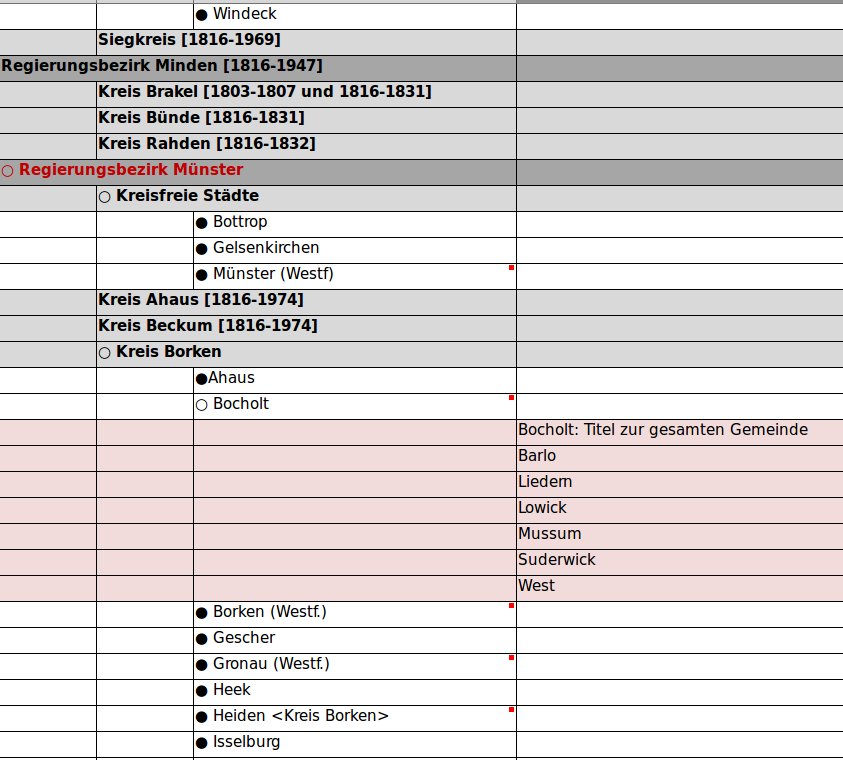

Using Wikidata to improve spatial subject indexing in a regional bibliography
Adrian Pohl / @acka47Offene Infrastruktur, Hochschulbibliothekszentrum NRW (hbz)

Berlin, 2019-10-26
This presentation:
http://slides.lobid.org/nwbib-wikidatacon/

NWBib
NWBib = "North-Rhine Westphalian Bibliography"
A regional bibliography (Q1609504) that records literature about North-Rhine Westphalia (NRW), its regions, places and people
besides monographs, especially articles are recorded as well as maps, DVDs etc.
420.000 entries from publication year 1983 onwards
Web application: nwbib.de (based on lobid-resources API)
Cataloging in hbz union catalog (Aleph)
The initial status (2017)
8,800 distinct strings for places (mostly administrative areas, but also monasteries, principalities, natural regions etc.)
Strings naively matched to Wikidata entries for geo coordinates (since 2014)
Drawbacks: non-unique names, no hierarchy, poor WD matching
Initial data (extract)
3 "Brauweiler"
1 "Brauweiler, Puhlheim"
132 "Brauweiler <Pulheim>"
5 "Brauweiler, Pulheim"
4 "Breitenbruch <Arnsberg>"
1 "Brelen"
29 "Bremen <Ense>"
1 "Bremke <Menden, Sauerland>"
1 "Brempt"
1 "Bremscheid"
4 "Bremscheid <Eslohe, Sauerland>"
3 "Brenig"
2 "Brenken <Büren, Kreis Paderborn>"
21 "Brenken <Büren, Paderborn>"Goal: a full-fledged spatial classification
Hierarchical view of places based on administrative areas
One entry/ID for each place
Mockup by NWBib editors (2016)
Best option: Wikidata
We looked at Integrated Authority File (GND), GeoNames and Wikidata
We chose Wikidata as data base mainly because of its coverage, its existing infrastructure
Good coverage of place entries, geo coordinates and hierarchical information
Infrastructure for editing and versioning was already there plus a community we could participate in to keep the data up to date
Requirement: intermediate data store
NWBib editors did not want NWBib to directly rely on Wikidata
...because Wikidata servers are not under our control
Also fear of unwelcome edits or vandalism
We decided to manage an intermediate SKOS (Simple Knowledge Organization System) file the application would rely on
How we did it: Five steps
- Match strings with Wikidata
- Create classification from Wikidata & update lobid/NWBib data
- Add links to NWBib in Wikidata with custom property plus qualifier for broader term
- Establish process for updating classification including review
- Update data in union catalog (Aleph) & use classification URIs in cataloging
Matching approach
Matching via API isn't sufficient (e.g. because different levels of administrative areas have very similar names)
Matching via custom Elasticsearch index (maximizing precision by type restriction)
The index is built based on Wikidata SPARQL query for specific entities in NRW
(see query evolution I and II)Example resource in matching index
{
"spatial":{
"id":"http://www.wikidata.org/entity/Q897382",
"label":"Ehrenfeld",
"geo":{
"lat":50.9464,
"lon":6.91833
},
"type":[
"http://www.wikidata.org/entity/Q15632166"
]
},
"aliases":[
{
"language":"de",
"value":"Köln/Ehrenfeld"
},
{
"language":"de",
"value":"Köln-Ehrenfeld"
}
],
"locatedIn":{
"language":"de",
"value":"Köln-Ehrenfeld"
}
}Matching Results
Successful automatic matching for >99% of records and ~92% of the place strings
For <1000 strings the matching was incorrect
Catalogers adjusted catalog records and made >6000 manual edits to Wikidata to reach 100% coverage (adding aliases & type information, creating new entries)
Create classification
Based on Wikidata entries and hierarchical statements (mainly P131)
Add SKOS concept URIs and links to Wikidata to lobid/NWBib (see "spatial" object in JSON example)
Spatial subjects in NWBib/lobid JSON
{
"spatial":[
{
"focus":{
"id":"http://www.wikidata.org/entity/Q365",
"geo":{
"lat":50.942222222222,
"lon":6.9577777777778
},
"type":[
"http://www.wikidata.org/entity/Q22865",
"http://www.wikidata.org/entity/Q707813",
"http://www.wikidata.org/entity/Q200250",
"http://www.wikidata.org/entity/Q2202509",
"http://www.wikidata.org/entity/Q42744322",
"http://www.wikidata.org/entity/Q1549591"
]
},
"id":"https://nwbib.de/spatial#Q365",
"type":[
"Concept"
],
"label":"Köln",
"notation":"05315000",
"source":{
"id":"https://nwbib.de/spatial",
"label":"Raumsystematik der Nordrhein-Westfälischen Bibliographie"
}
}
]
}Querying for literature based on a place's QID
spatial.focus.id:"http://www.wikidata.org/entity/Q365"Linking Wikidata and NWBib
Create Wikidata property for NWBib ID
Batch load NWBib IDs with QuickStatements (issue)
Add broader information to NWBib ID statements with qualifier P4900 (issue)
Establish update and review processes
Classification is created based on base SKOS conf file and Wikidata: spatial classification (SKOS version)
New classification entries are included by adding a P6814 (NWBib ID) statement in Wikidata
Hierarchy is adjusted using the P4900 qualifier
Review process for new versions of the classification to be specified
Update base data and cataloging process (to do)
Köln$$0https://nwbib.de/spatial#Q365
By the end of 2019 catalogers will start using Wikidata-based URIs for spatial subject indexing in Aleph
Existing NWBib entries will be updated in Aleph